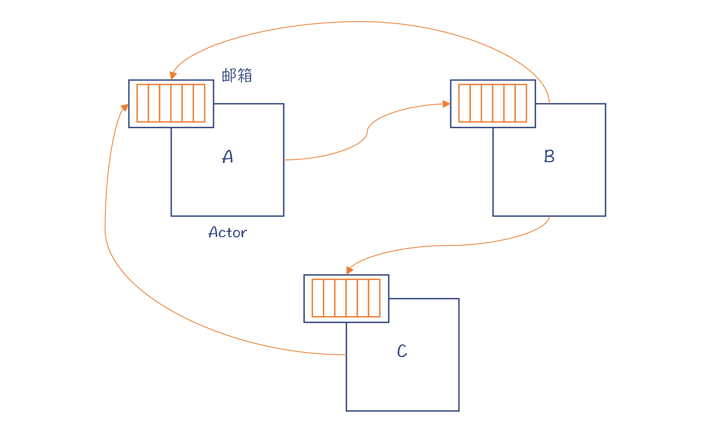
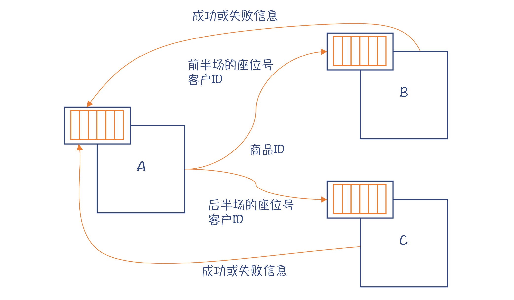
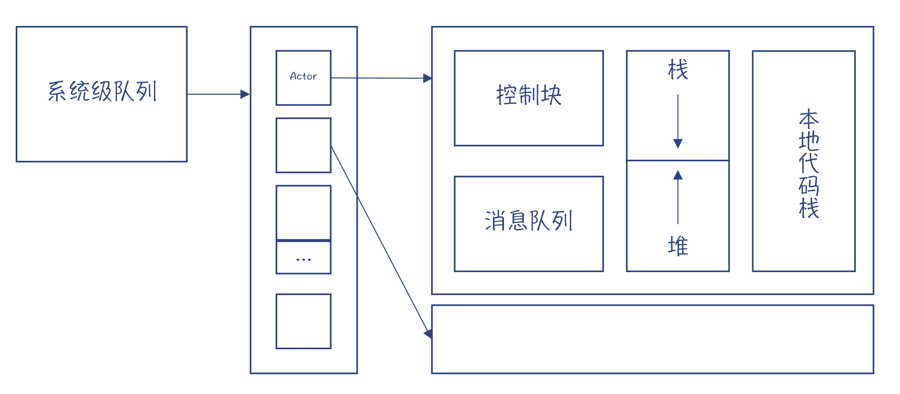
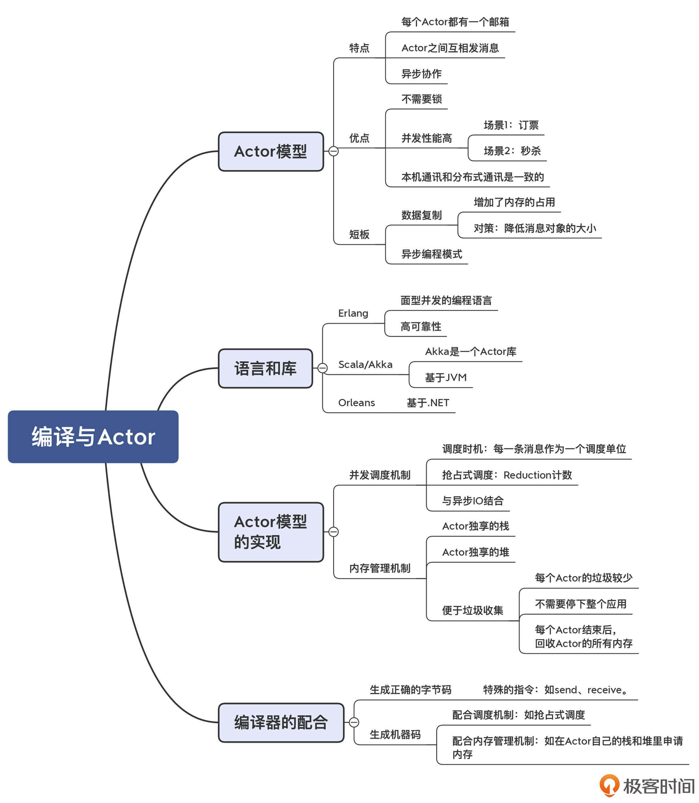

- 00 学习指南 如何学习这门编译原理实战课？.md.html
- 00 开篇词 在真实世界的编译器中游历.md.html
- 01 编译的全过程都悄悄做了哪些事情？.md.html
- 02 词法分析：用两种方式构造有限自动机.md.html
- 03 语法分析：两个基本功和两种算法思路.md.html
- 04 语义分析：让程序符合语义规则.md.html
- 05 运行时机制：程序如何运行，你有发言权.md.html
- 06 中间代码：不是只有一副面孔.md.html
- 07 代码优化：跟编译器做朋友，让你的代码飞起来.md.html
- 08 代码生成：如何实现机器相关的优化？.md.html
- 09 Java编译器（一）：手写的编译器有什么优势？.md.html
- 10 Java编译器（二）：语法分析之后，还要做些什么？.md.html
- 11 Java编译器（三）：属性分析和数据流分析.md.html
- 12 Java编译器（四）：去除语法糖和生成字节码.md.html
- 13 Java JIT编译器（一）：动手修改Graal编译器.md.html
- 14 Java JIT编译器（二）：Sea of Nodes为何如此强大？.md.html
- 15 Java JIT编译器（三）：探究内联和逃逸分析的算法原理.md.html
- 16 Java JIT编译器（四）：Graal的后端是如何工作的？.md.html
- 17 Python编译器（一）：如何用工具生成编译器？.md.html
- 18 Python编译器（二）：从AST到字节码.md.html
- 19 Python编译器（三）：运行时机制.md.html
- 20 JavaScript编译器（一）：V8的解析和编译过程.md.html
- 21 JavaScript编译器（二）：V8的解释器和优化编译器.md.html
- 22 Julia编译器（一）：如何让动态语言性能很高？.md.html
- 23 Julia编译器（二）：如何利用LLVM的优化和后端功能？.md.html
- 24 Go语言编译器：把它当作教科书吧.md.html
- 25 MySQL编译器（一）：解析一条SQL语句的执行过程.md.html
- 26 MySQL编译器（二）：编译技术如何帮你提升数据库性能？.md.html
- 27 课前导读：学习现代语言设计的正确姿势.md.html
- 28 前端总结：语言设计也有人机工程学.md.html
- 29 中端总结：不遗余力地进行代码优化.md.html
- 30 后端总结：充分发挥硬件的能力.md.html
- 31 运行时（一）：从0到语言级的虚拟化.md.html
- 32 运行时（二）：垃圾收集与语言的特性有关吗？.md.html
- 33 并发中的编译技术（一）：如何从语言层面支持线程？.md.html
- 34 并发中的编译技术（二）：如何从语言层面支持协程？.md.html
- 35 并发中的编译技术（三）：Erlang语言厉害在哪里？.md.html
- 36 高级特性（一）：揭秘元编程的实现机制.md.html
- 37 高级特性（二）：揭秘泛型编程的实现机制.md.html
- 38 综合实现（一）：如何实现面向对象编程？.md.html
- 39 综合实现（二）：如何实现函数式编程？.md.html
- 40 成果检验：方舟编译器的优势在哪里？.md.html
- 不定期加餐1 远程办公，需要你我具备什么样的素质？.md.html
- 不定期加餐2 学习技术的过程，其实是训练心理素质的过程.md.html
- 不定期加餐3 这几年，打动我的两本好书.md.html
- 不定期加餐4 从身边的牛人身上，我学到的一些优秀品质.md.html
- 不定期加餐5 借助实例，探究C++编译器的内部机制.md.html
- 划重点 7种编译器的核心概念与算法.md.html
- 期末答疑与总结 再次审视学习编译原理的作用.md.html
- 热点问题答疑 如何吃透7种真实的编译器？.md.html
- 用户故事 易昊：程序员不止有Bug和加班，还有诗和远方.md.html
- 知识地图 一起来复习编译技术核心概念与算法.md.html
- 结束语 实战是唯一标准！.md.html
- 捐赠
35 并发中的编译技术（三）：Erlang语言厉害在哪里？
你好，我是宫文学。
在前面两讲，我们讨论了各门语言支持的并发计算的模型。线程比进程更加轻量级，上下文切换成本更低；协程则比线程更加轻量级，在一台计算机中可以轻易启动几十万、上百万个并发任务。
但不论是线程模型、还是协程模型，当涉及到多个线程访问共享数据的时候，都会出现竞争问题，从而需要用到锁。锁会让其他需要访问该数据的线程等待，从而导致系统整体处理能力的降低。
并且，编程人员还要特别注意，避免出现死锁。比如，线程A持有了锁x，并且想要获得锁y；而线程B持有了锁y，想要获得锁x，结果这两个线程就会互相等待，谁也进行不下去。像数据库这样的系统，检测和消除死锁是一项重要的功能，以防止互相等待的线程越来越多，对数据库操作不响应，并最终崩溃掉。
既然使用锁这么麻烦，那在并发计算中，能否不使用锁呢？这就出现了Actor模型。那么，什么是Actor模型？为什么它可以不用锁就实现并发？这个并发模型有什么特点？需要编译技术做什么配合？
今天这一讲，我们就从这几个问题出发，一起学习并理解Actor模型。借此，我们也可以把用编译技术支持不同的并发模型的机制，理解得更深刻。
首先，我们看一下什么是Actor模型。
什么是Actor模型？
在线程和协程模型中，之所以用到锁，是因为两个线程共享了内存，而它们会去修改同一个变量的值。那，如果避免共享内存，是不是就可以消除这个问题了呢？
没错，这就是Actor模型的特点。Actor模型是1973年由Carl Hewitt提出的。在Actor模型中，并发的程序之间是不共享内存的。它们通过互相发消息来实现协作，很多个一起协作的Actor就构成了一个支持并发计算的系统。
我们看一个有三个Actor的例子。

图1：三个Actor的例子
你会注意到，每个Actor都有一个邮箱，用来接收其他Actor发来的消息；每个Actor也都可以给其他Actor发送消息。这就是Actor之间交互的方式。Actor A给Actor B发完消息后就返回，并不会等着Actor B处理完毕，所以它们之间的交互是异步的。如果Actor B要把结果返回给A，也是通过发送消息的方式。
这就是Actor大致的工作原理了。因为Actor之间只是互发消息，没有共享的变量，当然也就不需要用到锁了。
但是，你可能会问：如果不共享内存，能解决传统上需要对资源做竞争性访问的需求吗？比如，卖电影票、卖火车票、秒杀或者转账的场景。我们以卖电影票为例讲解一下。
在用传统的线程或者协程来实现卖电影票功能的时候，对票的状态进行修改，需要用锁的机制实现同步互斥，以保证同一个时间段只有一个线程可以去修改票的状态、把它分配给某个用户，从而避免多个线程同时访问而出现一张票卖给多个人的情况。这种情况下，多个程序是串行执行的，所以系统的性能就很差。
如果用Actor模式会怎样呢？
你可以把电影院的前半个场地和后半个场地的票分别由Actor B和 C负责销售：Actor A在接收到定前半场座位的请求的时候，就发送给Actor B，后半场的就发送给Actor C，Actor B和C依次处理这些请求；如果Actor B或C接收到的两个信息都想要某个座位，那么针对第二个请求会返回订票失败的消息。

图2：Actor用于订票场景
你发现没有？在这个场景中，Actor B和C仍然是顺序处理各个请求。但因为是两个Actor并发地处理请求，所以系统整体的性能会提升到原来的两倍。
甚至，你可以让每排座位、每个座位都由一个Actor负责，使得系统的性能更高。因为在系统中创建一个Actor的成本是很低的。Actor跟协程类似，很轻量级，一台服务器里创建几十万、上百万个Actor也没有问题。如果每个Actor负责一个座位，那一台服务器也能负责几十万、上百万个座位的销售，也是可以接受的。
当然，实际的场景要比这个复杂，比如一次购买多张相邻的票等，但原理是一样的。用这种架构，可以大大提高并发能力，处理海量订票、秒杀等场景不在话下。
其实，我个人比较喜欢Actor这种模式，因为它跟现实世界里的分工协作很相似。比如，餐厅里不同岗位的员工，他们通过互相发信息来实现协作，从而并发地服务很多就餐的顾客。
分析到这里，我再把Actor模式跟你非常熟悉的一个概念，面向对象编程（Object Oriented Programming，OOP）关联起来。你可能会问：Actor和面向对象怎么还有关联？
是的。面向对象语言之父阿伦 · 凯伊（Alan Kay），Smalltalk的发明人，在谈到面向对象时是这样说的：对象应该像生物的细胞，或者是网络上的计算机，它们只能通过消息互相通讯。对我来说OOP仅仅意味着消息传递、本地保留和保护以及隐藏状态过程，并且尽量推迟万物之间的绑定关系。
I thought of objects being like biological cells and/or individual computers on a network, only able to communicate with messages (so messaging came at the very beginning – it took a while to see how to do messaging in a programming language efficiently enough to be useful)- …- OOP to me means only messaging, local retention and protection and hiding of state-process, and extreme late-binding of all things. It can be done in Smalltalk and in LISP.
总结起来，Alan对面向对象的理解，强调消息传递、封装和动态绑定，没有谈多态、继承等。对照这个理解，你会发现Actor模式比现有的流行的面向对象编程语言，更加接近面向对象的实现。
无论如何，通过把Actor和你熟悉的面向对象做关联，我相信能够拉近你跟Actor之间的距离，甚至会引发你以新的视角来审视目前流行的面向对象范式。
好了，到现在，你可以说是对Actor模型比较熟悉了，也可以这么理解：Actor有点像面向对象程序里的对象，里面可以封装一些数据和算法；但你不能调用它的方法，只能给它发消息，它会异步地、并发地处理这些消息。
但是，你可能会提出一个疑问：Actor模式不用锁的机制就能实现并发程序之间的协作，这一点很好，那么它有没有什么缺点呢？
我们知道，任何设计方案都是一种取舍。一个方案有某方面的优势，可能就会有其他方面的劣势。采用Actor模式，会有两方面的问题。
第一，由于Actor之间不共享任何数据，因此不仅增加了数据复制的时间，还增加了内存占用量。但这也不完全是缺点：一方面，你可以通过在编写程序时，尽量降低消息对象的大小，从而减少数据复制导致的开销；另一方面，消息传递的方式对于本机的Actor和集群中的Actor是一样的，这就使得编写分布式的云端应用更简单，从而在云计算时代可以获得更好的应用。
第二，基于消息的并发机制，基本上是采用异步的编程模式，这就和通常程序的编程风格有很大的不同。你发出一个消息，并不会马上得到结果，而要等待另一个Actor发送消息回来。这对于习惯于编写同步代码的同学，可能是一个挑战。
好了，我们已经讨论了Actor机制的特点。接下来我们再看看，什么语言和框架实现了Actor模式。
支持Actor模型的语言和框架
支持Actor的最有名的语言是Erlang。Erlang是爱立信公司发明的，它的正式版本是在1987年发布，其核心设计者是乔 · 阿姆斯特朗（Joe Armstrong），最早是用于开发电信领域的软件系统。
在Erlang中，每个Actor叫作一个进程（Process）。但这个“进程”其实不是操作系统意义上的进程，而是Erlang运行时的并发调度单位。
Erlang有两个显著的优点：首先，对并发的支持非常好，所以它也被叫做面向并发的编程语言（COP）。第二，用Erlang可以编写高可靠性的软件，可以达到9个9。这两个优点都与Actor模式有关：
- Erlang的软件由很多Actor构成；
- 这些Actor可以分布在多台机器上，相互之间的通讯跟在同一台机器上没有区别；
- 某个Actor甚至机器出现故障，都不影响整体系统，可以在其他机器上重新启动该Actor；
- Actor的代码可以在运行时更新。
所以，由Actor构成的系统真的像一个生命体，每个Actor像一个细胞。细胞可以有新陈代谢，而生命体却一直存在。可以说，用Erlang编写的基于Actor模式的软件，非常好地体现了复杂系统的精髓。到这里，你是不是就能解释“Erlang语言厉害在哪里”这个问题了。
鉴于Actor为Erlang带来的并发能力和高可靠性，有一些比较流行的开源系统就是用Erlang编写的。比如，消息队列系统RabbitMQ、分布式的文档数据库系统CouchDB，都很好地体现了Erlang的并发能力和健壮性。
除了Erlang以外，Scala语言也提供了对Actor的支持，它是通过Akka库实现的，运行在JVM上。我还关注了微软的一个Orleans项目，它在.NET平台上支持Actor模式，并进一步做了一些有趣的创新。
那接下来我们继续探讨一下，这些语言和框架是如何实现Actor机制的，以及需要编译器做什么配合。
Actor模型的实现
在上一讲研究过协程的实现机制以后，我们现在再分析Actor的实现机制时，其实就应该会把握要点了。比如说，我们会去看它的调度机制和内存管理机制等。鉴于Erlang算是支持Actor的最有名、使用最多的语言，接下来我会以Erlang的实现机制带你学习Actor机制是如何实现的。
首先，我们知道，肯定要有个调度器，把海量的Actor在多个线程上调度。
并发调度机制
那我们需要细究一下：对于Actor，该如何做调度呢？什么时候把一个Actor停下，让另一个Actor运行呢？
协程也好，Actor也好，都是在应用级做调度，而不是像线程那样，在应用完全不知道的情况下，就被操作系统调度了。对于协程，我们是通过一些像yield这样的特殊语句，触发调度机制。那，Actor在什么时候调度比较好呢？
前面我们也讲过了，Actor的运行规律，是每次从邮箱取一条消息并进行处理。那么，我们自然会想到，一个可选的调度时机，就是让Actor每处理完一条消息，就暂停一下，让别的Actor有机会运行。当然，如果处理一条消息所花费的时间太短，比如有的消息是可以被忽略的，那么处理多条消息，累积到一定时间再去调度也行。
了解了调度时机，我们再挑战第二个比较难的话题：如果处理一条消息就要花费很长时间怎么办呢？能否实现抢占式的调度呢，就像Goroutine那样？
当然可以，但这个时候就肯定需要编译器和运行时的配合了。
Erlang的运行机制，是基于一个寄存器机解释执行。这使得调度器可以在合适的时机，去停下某个Actor的运行，调度其他Actor过来运行。
Erlang做抢占式调度的机制是对Reduction做计数，Reduction可以看作是占时不长的一小块工作量。如果某个Actor运行了比较多的Reduction，那就可以对它做调度，从而提供了软实时的能力（具体可以参考这篇文章）。
在比较新的版本中，Erlang也加入了编译成本地代码的特性，那么在生成的本地代码中，也需要编译器加入对Reduction计数的代码，这就有点像Goroutine了。
这也是Erlang和Scala/Akka的区别。Akka没有得到编译器和JVM在底层的支持，也就没办法实现抢占式的调度。这有可能让某些特别耗时的Actor影响了其他Actor，使得系统的响应时间不稳定。
最后一个涉及调度的话题，是I/O与调度的关系。这个关系如果处理得不好，那么对系统整体的性能影响会很大。
通常我们编写I/O功能时，会采用同步编程模式来获取数据。这个时候，操作系统会阻塞当前的线程，直到成功获取了数据以后，才可以继续执行。
getSomeData(); //操作系统会阻塞住线程，直到获得了数据。
do something else //继续执行
采用这种模式开发一个服务端程序，会导致大量线程被阻塞住，等待I/O的结果。由于每个线程都需要不少的内存，并且线程切换的成本也比较高，因此就导致一台服务器能够服务的客户端数量大大降低。如果这时候，你在运行时查看服务程序的状态，就会发现大量线程在等待，CPU利用率也不高，而新的客户端又连接不上来，造成服务器资源的浪费。
并且，如果采用协程等应用级的并发机制，一个线程被阻塞以后，排在这个线程上的其他协程也只能等待，从而导致服务响应时间变得不可靠，有时快，有时慢。我们在前一讲了解过Goroutine的调度器。它在遇到这种情况的时候，就会把这条线程上的其他Goroutine挪到没被阻塞的线程上，从而尽快得到运行机会。
由于阻塞式I/O的缺点，现在很多语言也提供了非阻塞I/O的机制。在这种机制下，程序在做I/O请求的时候并不能马上获得数据。当操作系统准备好数据以后，应用程序可以通过轮询或被回调的方式获取数据。Node.js就是采用这种I/O模式的典型代表。
上一讲提到的C++协程库libco，也把非阻塞的网络通讯机制和协程机制做了一个很好的整合，大大增加了系统的整体性能。
而Erlang在很早以前就解决了这个问题。在Erlang的最底层，所有的I/O都是用事件驱动的方式来实现的。系统收到了一块数据，就调用应用来处理，整个过程都是非阻塞的。
说完了并发调度机制，我们再来看看运行时的另一个重要特征，内存管理机制。
内存管理机制
内存管理机制要考虑栈、堆都怎么设计，以及垃圾收集机制等内容。

图3：Erlang的内存模型
首先说栈。每个Actor也需要有自己的栈空间，在执行Actor里面的逻辑的时候，用于保存本地变量。这跟上一节讲过的Stateful的协程很像。
再来看看堆。Erlang的堆与其他语言有很大的区别，它的每个Actor都有自己的堆空间，而不是像其他编程模型那样，不同的线程共享堆空间。这也很容易理解，因为Actor模型的特点，就是并发的程序之间没有共享的内存，所以当然也就不需要共享的堆了。
再进一步，由于每个Actor都有自己的堆，因此会给垃圾收集带来很大的便利：
- 因为整个程序划分成了很多个Actor，每个Actor都有自己的堆，所以每个Actor的垃圾都比较少，不用一次回收整个应用的垃圾，所以回收速度会很快。
- 由于没有共享内存，所以垃圾收集器不需要停下整个应用，而只需要停下被收集的Actor。这就避免了“停下整个世界（STW）”问题，而这个问题是Java、Go等语言面临的重大技术挑战。
- 如果一个Actor的生命周期结束，那么它占用的内存会被马上释放掉。这意味着，对于有些生命周期比较短的Actor来说，可能压根儿都不需要做垃圾收集。
好了，基于Erlang，我们学习了Actor的运行时机制的两个重要特征：一是并发调度机制，二是内存管理机制。那么，与此相配合，需要编译器做什么工作呢？
编译器的配合工作
我们说过，Erlang首先是解释执行的，是用一个寄存器机来运行字节码。那么，编译器的任务，就是生成正确的字节码。
之前我们已经分别研究过Graal、Python和V8 Ignition的字节码了。我们知道，字节码的设计很大程度上体现了语言的设计特点，体现了与运行时的交互过程。Erlang的字节码设计当然也是如此。
比如，针对消息的发送和接收，它专门提供了send指令和receive指令，这体现了Erlang的并发特征。再比如，Erlang还提供了与内存管理有关的指令，比如分配一个新的栈桢等，体现了Erlang在内存管理上的特点。
不过，我们知道，仅仅以字节码的方式解释执行，不能满足计算密集型的需求。所以，Erlang也正在努力提供编译成机器码运行的特性，这也需要编译器的支持。那你可以想象出，生成的机器码，一定也会跟运行时配合，来实现Erlang特有的并发机制和内存管理机制。
课程小结
今天这一讲，我们介绍了另一种并发模型：Actor模型。Actor模型的特点，是避免在并发的程序之间共享任何信息，从而程序就不需要使用锁机制来保证数据的一致性。但是，采用Actor机制也会因为数据拷贝导致更大的开销，并且你需要习惯异步的编程风格。
Erlang是实现Actor机制的典型代表。它被称为面向并发的编程语言，并且能够提供很高的可靠性。这都源于它善用了Actor的特点：由Actor构成的系统更像一个生命体一般的复杂系统。
在实现Actor模型的时候，你要在运行时里实现独特的调度机制和内存管理机制，这些也需要编译器的支持。
本讲的思维导图我也放在了下面，供你参考：

好了，今天这一讲加上第33和34讲，我们用了三讲，介绍了不同计算机语言是如何实现并发机制的。不难看出，并发机制确实是计算机语言设计中的一个重点。不同的并发机制，会非常深刻地影响计算机语言的运行时的实现，以及所采用的编译技术。
一课一思
你是否也曾经采用过消息传递的机制，来实现多个系统或者模块之间的调度？你从中获得了什么经验呢？欢迎你和我分享。
参考资料
- Carl Hewitt关于Actor的论文
- 微软Orleans项目介绍
- 介绍Erlang虚拟机原理的在线电子书
- 介绍Erlang字节码的文章
© 2019 - 2023 Liangliang Lee. Powered by gin and hexo-theme-book.